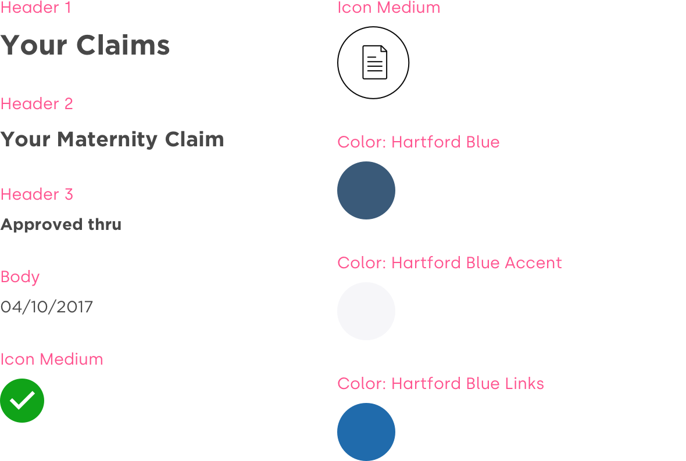
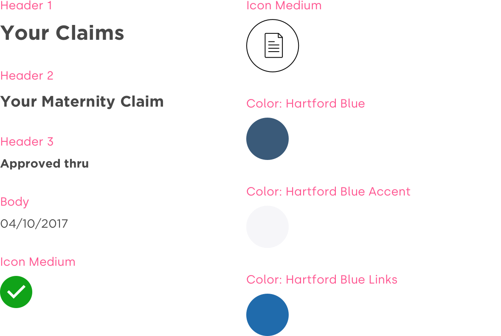

Research
Current State
In order to know how to design for the future, we needed to ground ourselves on the current state, and why it was so confusing to our users
Figuring out approved time
Figuring out time available

Opportunity
Following the MVP launch of MyBenefits, The Hartford was looking to integrate the leave of absence management feature set into the new site. Leave is a very complicated process, and we were looking to find ways to translate that process into something simple and intuitive for our users.
Roles
Experience Design Lead
Visual Designer
Prototyper
Tools
Sketch
Invision
Craft
Schedule
1 month exploration phase
10 sprints
2 week sprints
Research
Interviews
We conducted a couple of rounds of research with existing users to identify key points to focus on with our design. After synthesizing our findings, we determined three priorities for the project
1
Show me my leave in terms I can understand
2
Tell me when I am approved to take time off
3
Tell me how much time I have for future absences
Research
Current State
In order to know how to design for the future, we needed to ground ourselves on the current state, and why it was so confusing to our users
Figuring out approved time
Figuring out time available